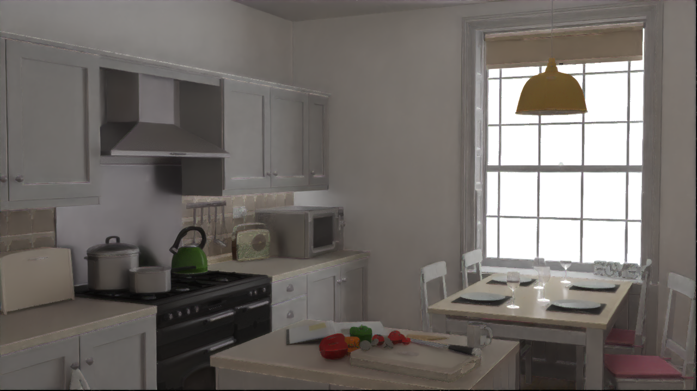
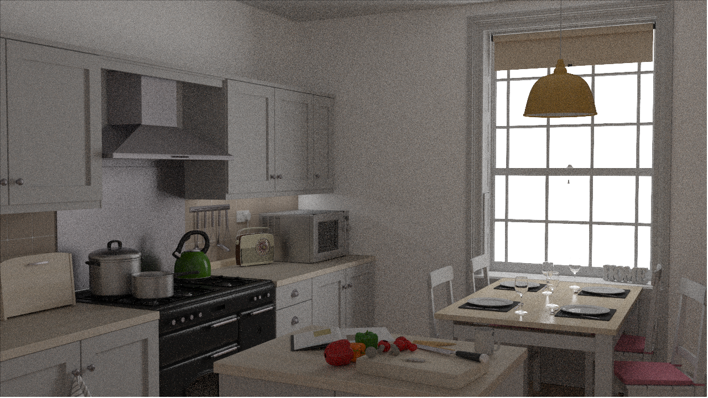
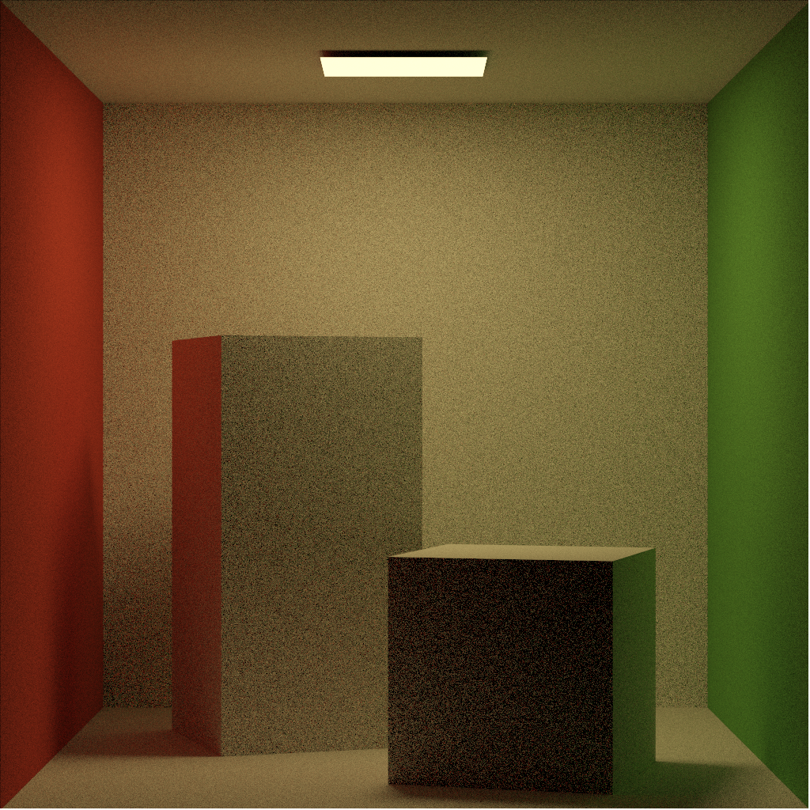
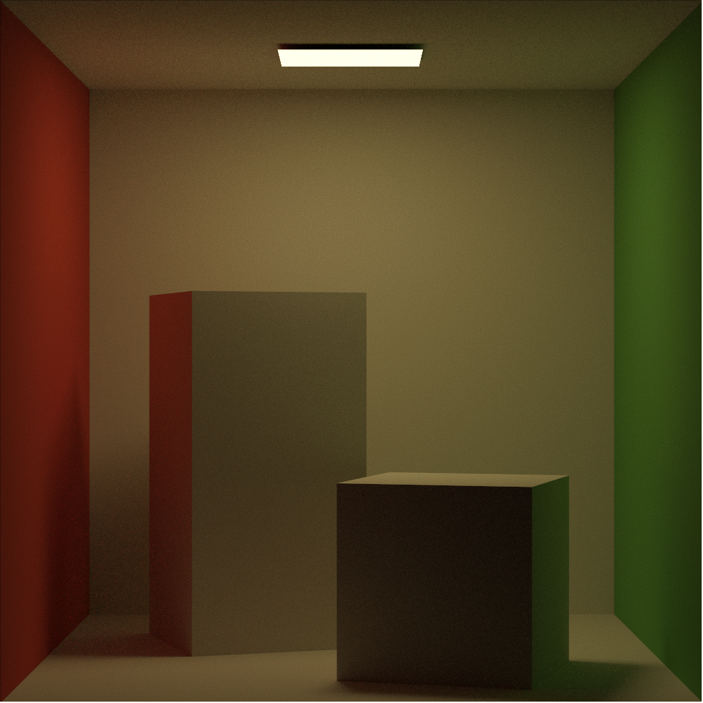
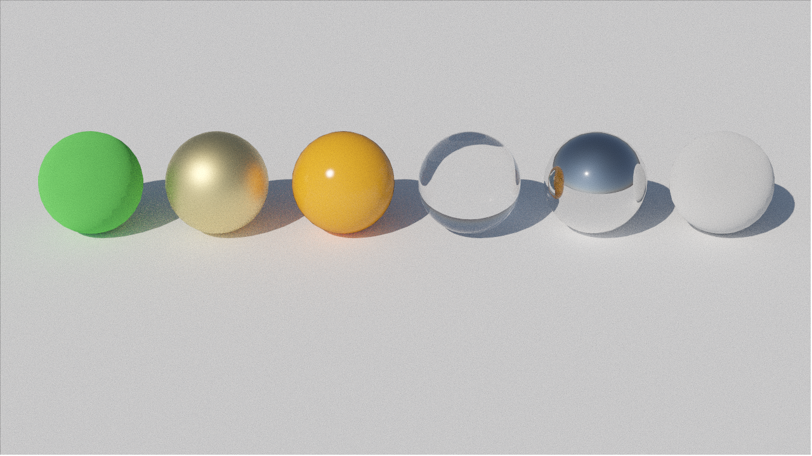
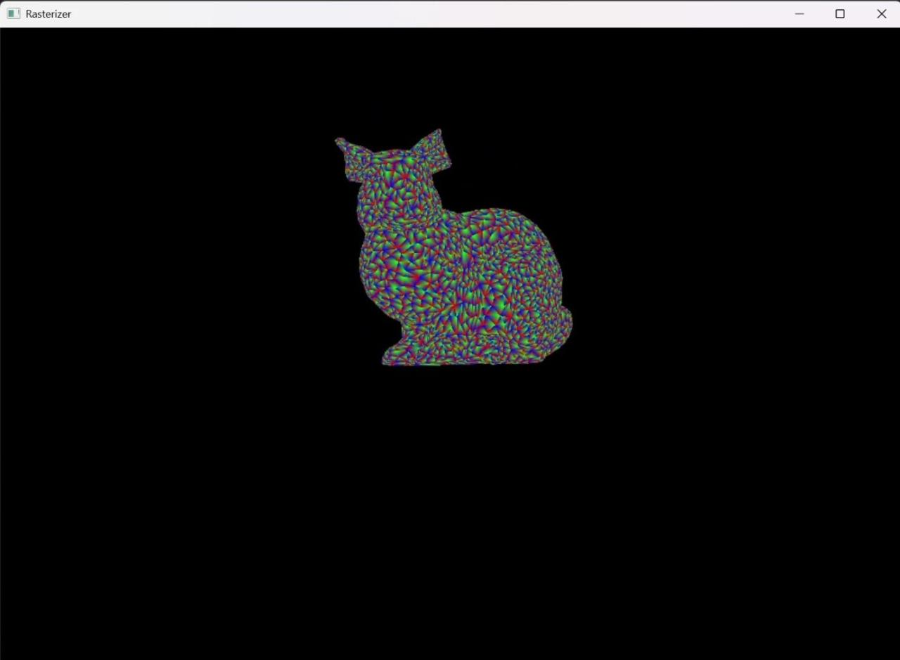
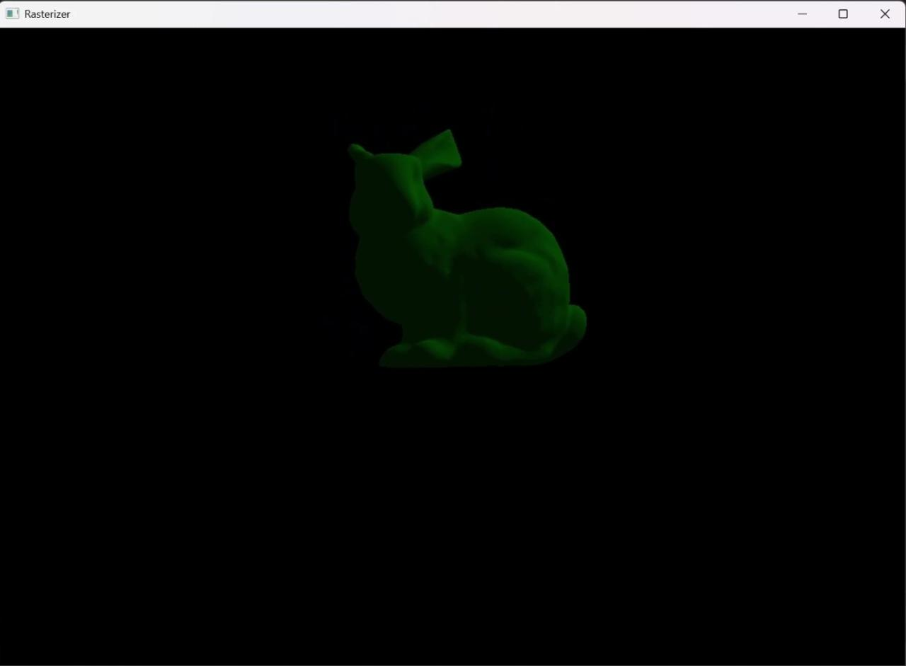
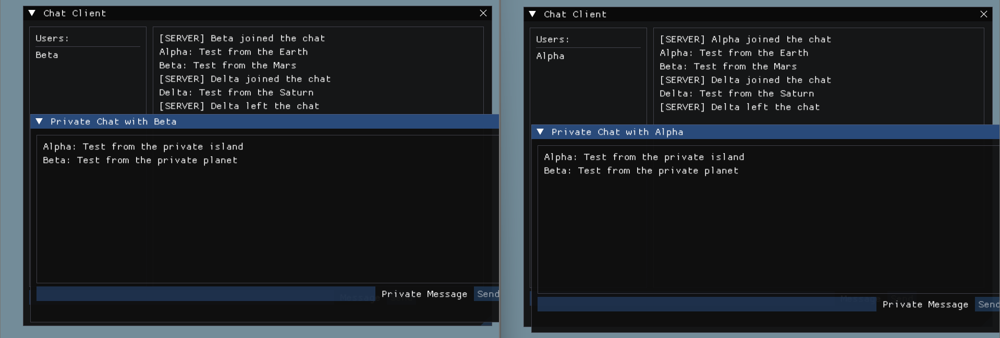

A multithreaded, physically based CPU renderer in C++, built to explore advanced light transport and microfacet models.
Why it matters
Simulates highly realistic lighting and materials using industry-standard math and data structures, dramatically reducing render times and visual noise through spatial optimizations and Intel AI denoising.
Architecture: three integrators in one engine: Path Tracing, Light Tracing, and Instant Radiosity (which uses a Halton quasi-Monte Carlo sampler relying on prime bases for the Radical Inverse).
Material framework: GGX microfacets (Conductor BSDF, sampled proportionally to the NDF), Plastic (Phong), Diffuse, Oren-Nayar, Glass, Mirror, and a Layered BSDF evaluating Beer's Law for attenuation.
Performance: render time and variance optimized with a Binned SAH BVH (Surface Area Heuristics Bounding Volume Hierarchy), tile-based multithreading, and Multiple Importance Sampling (MIS) for latitude-longitude environment maps.
Denoising: custom AOV outputs feed directly into Intel OIDN for machine-learning-based post-process denoising.
C++MultithreadingBVHMISPBR MathIntel OIDN


128 spp reference16 spp + OIDN
Drag to compare: 128 spp reference vs. 16 spp denoised with Intel OIDN. Automatically adjusts to scene aspect ratios.


Path TracingLight Tracing
Comparing integrators in the Cornell Box: Path Tracing, Light Tracing, and Instant Radiosity.

RENDERMaterialsScene128SPP.png
Materials test: GGX conductor, Plastic, Oren-Nayar, Glass, and Mirror BSDFs.002
A CPU implementation of the graphics pipeline, hand-optimized for throughput using hardware-level parallelization (SIMD and multithreading).
Hardware profiling · the "thread plateau"
I profiled how performance scales with thread count on my Intel Core Ultra 7 155H, a hybrid CPU with 6 Performance cores, 8 Efficiency cores, and 2 Low-Power Efficiency cores (16 cores / 22 threads). SIMD (SSE/AVX) plus multithreading gave large early gains, but the speedup peaks at roughly 2.8x around 6 threads and then degrades. That inflection lines up with the Performance-core count: the first threads land on the fast P-cores, and scaling past them onto the slower E-cores, LP-cores, and hyperthreads adds workers that are both slower and competing for shared resources, so throughput stops improving and starts to regress.
Reference render from my previous DX12 framework. The current WIP engine is a complete low-level re-architecture to improve scalability and resource binding.004
A proving ground for light-transport math based on the Ray Tracing in One Weekend (Shirley et al., 2025) architecture. I extended the base engine with Motion Blur and a custom Bounding Volume Hierarchy (BVH) to drastically reduce spatial-intersection costs. The per-pixel render loop and the BVH build are both parallelized using C++17 std::execution::par to maximize CPU utilization.
An engine built entirely from scratch to deeply understand the math behind graphics APIs. Instead of using existing math libraries (like GLM), I wrote the matrix, vector, and homogeneous-coordinate mathematics myself. Implements the full Model-View-Projection (MVP) chain, perspective-correct interpolation, depth buffering (Z-buffer), and Lambertian lighting, parsing .gem meshes to render pixel-perfect geometry.
C++3D MathMVP PipelineZ-buffer


Lambertian ShadedWireframe / Geometry
Stanford bunny parsed from a .gem mesh: Drag to compare shaded rendering vs. raw geometry.006
A multithreaded networking application showcasing system-level programming outside of graphics. A custom client-server architecture using WinSock: the server concurrently handles multiple clients, while the client uses a Dear ImGui interface with public broadcasting, private 1-to-1 direct messages, and real-time FMOD audio notifications.
C++MultithreadingWinSockDear ImGuiFMOD

SCREENSHOTChatRoom.png
Dear ImGui client interface showing global server broadcasts (top window) and private 1-to-1 direct messaging (bottom window).
+
Also Built
Unreal Engine 5 · Team project · University of Warwick
UE5 Game
A team game built in Unreal Engine 5 with a 42-person team organized into 7 groups, each responsible for a level. I owned the visual look: custom materials and shaders, volumetric fog, and lighting.
Python · Team graduation project · IEEE SIU 2025
Real-Time Face Recognition
On-premise authentication to replace ID cards and QR codes. OpenCV Haar Cascade detection, FaceNet 512-dimensional embeddings, and PostgreSQL + pgvector KNN search verify identities in under five seconds, behind a Flask staff dashboard with role-based access and 2FA. Selected to present a poster at the 33rd IEEE SIU 2025 conference.
02
About
I'm a Software Engineering graduate pursuing a Master's in Games Engineering at WMG, University of Warwick. I spend most of my time on real-time rendering and computer graphics: writing renderers, reading papers, and figuring out why the image looks wrong. I play video games too (shocking, I know 🎮), and I'm aiming to specialize as a Graphics Programmer.
I was recently selected for a graphics-focused dissertation on path guiding, supervised by Dr. Thomas Bashford-Rogers, and most of my current work is groundwork for it.